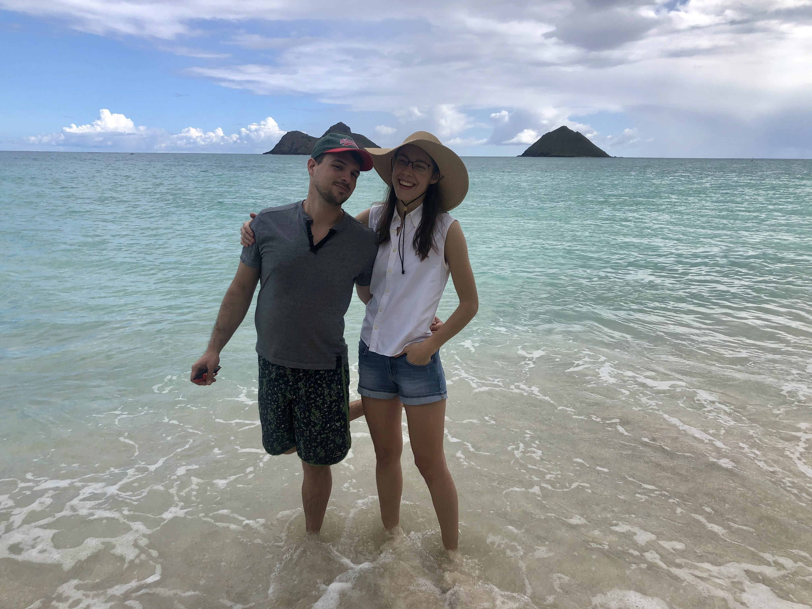
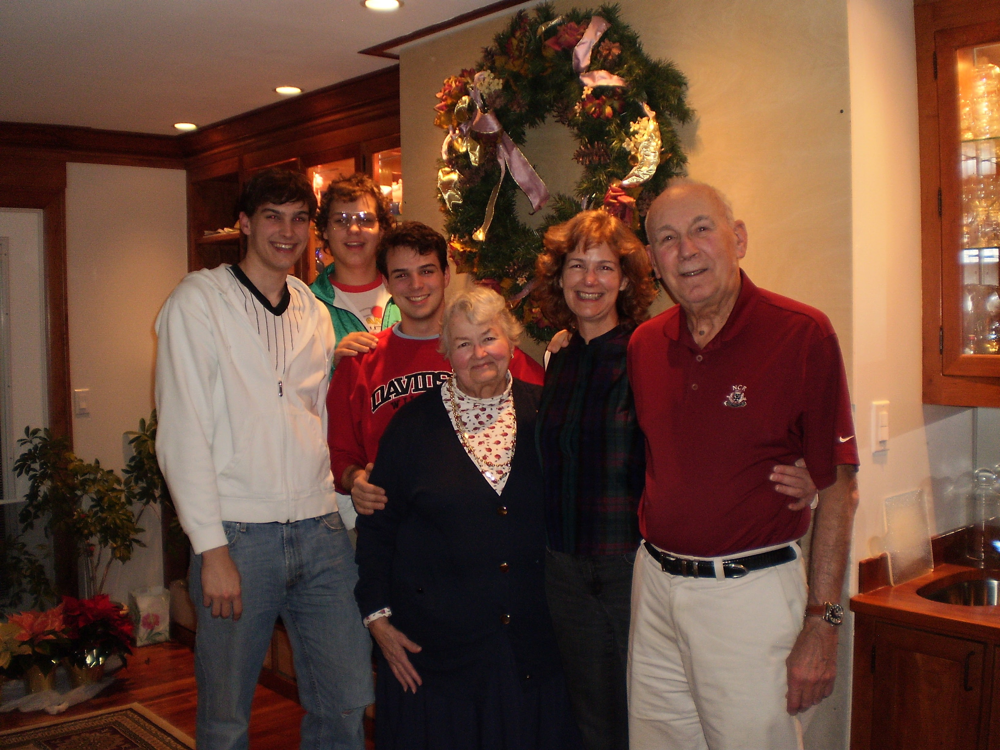
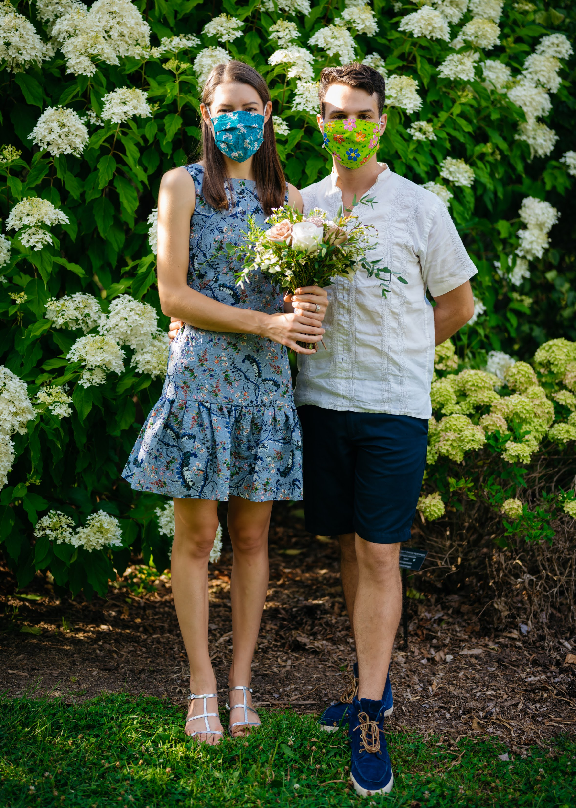
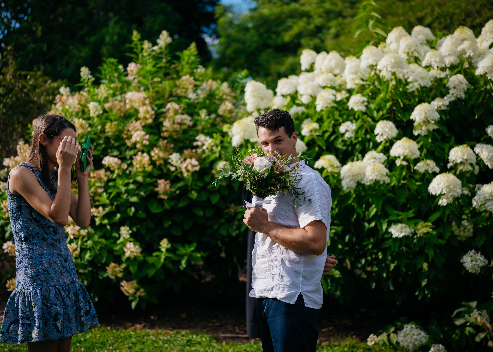
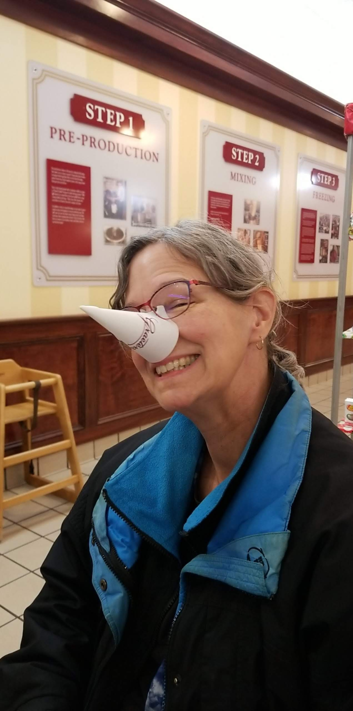
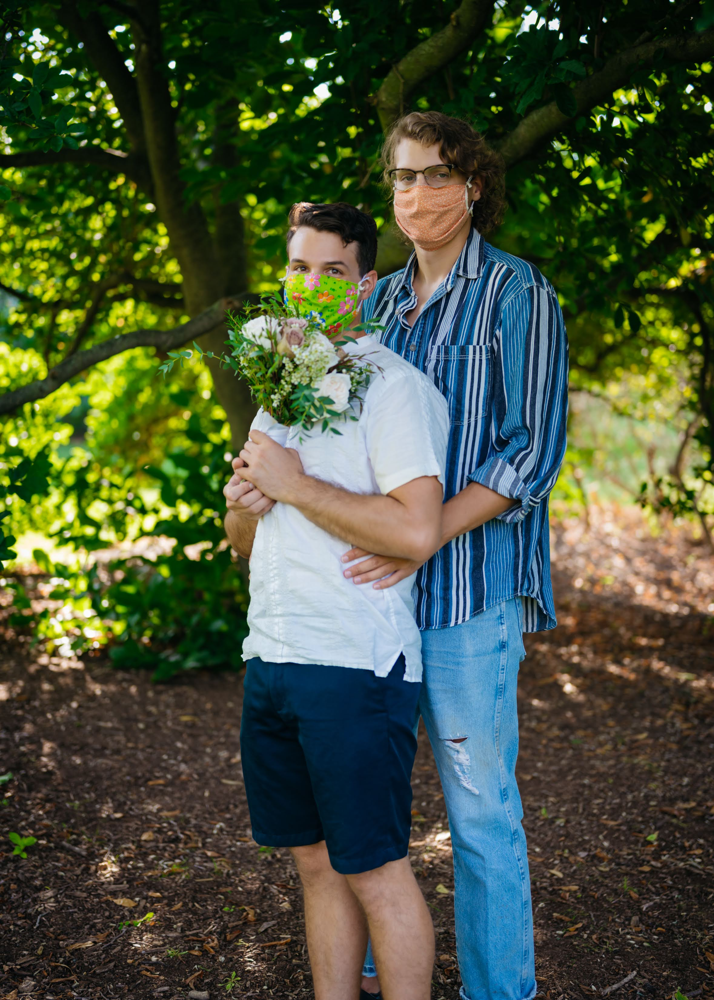
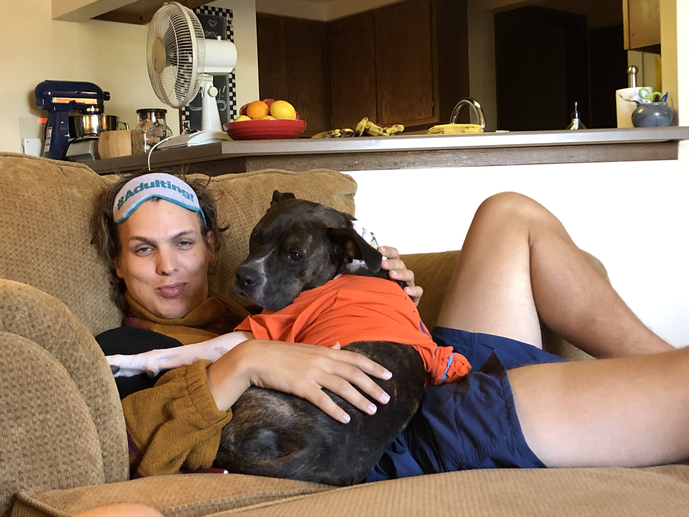
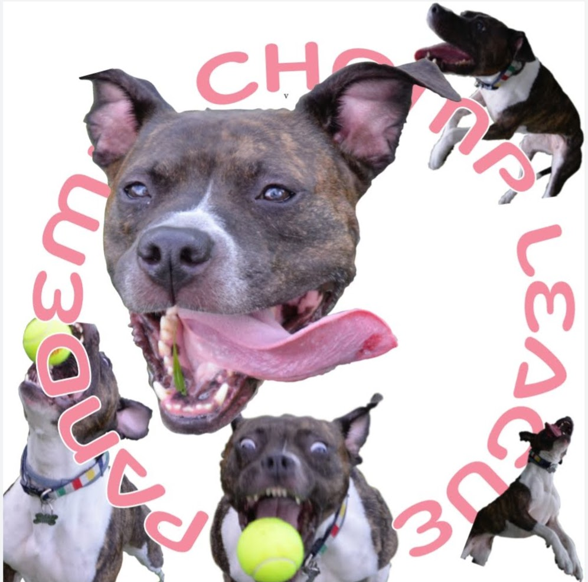

Well, it's the end of the year: so long 2020! I've been holding off on writing about this past year for a number of reasons, most easily boiled down to just a general blurgh feeling about the year.

Since I last wrote one of these, a lot has obviously happened. There are probably a lot of news stories from this past year which have either made you numb to the world, or to which you feel no connection whatsoever. As we enter a new year, I would encourage you to take a night every so often to open yourself up, and challenge your status quo of thinking. To help, I've made a short list of the terms I personally am trying to open myself up to, or am working to continue learning and working toward a better future on:
So, with that out of the way: The personal news...

Since last writing, we said goodbye to my grandmother. I had assumed this time last year, that this would be the thing which ate up the majority of my letter this year. My grandmother Janet was one of two of the most influential teachers I had in my life (grandpa being the other). She was quirky, and cooky, and rough around the edges, but she is also the person who taught me how to use colour, draw, sculpt, and to create. Her eye for anything graphic, was almost second to none. She also had a, often painfully annoying, candor to her. She would tell you what was wrong with whatever you did no matter the circumstances...nor present company. She will be missed.

Natalie's big news this year, is probably what should be my biggest news too. After about 8 years of dating and a brief engagement, we are now officially married. I regret to inform everyone that nothing has really changed between us day to day, other than I now have my first tattoo. Seriously, Nat was already wearing her engagement ring for the last handful of years on her left hand because "this is the only finger this family heirloom will fit on". Our ceremony was us, my brother Charley, our dear friend Dakota (who is also an unreal photographer), and our Judge JoAnne Kloppenburg. It was held on August 21st, in the Arboretum here. Natalie wants to have another ceremony when the world is less on fire.

Natalie is here laying on the ground playing with the dog's jowls and is upset I forgot to include anything about her big scholarship news. She also received the highly prestigious version of the SSHRC scholarship from the Canadian Government. The actual name of this scholarship is about the same length of this paragraph, so for everyone's sake, I have omitted it.

Momas and Thomas are doing their thing in New Brunswick. Now ordained, and installed as a minister in Canada my mother has more problems than just dealing with my brothers and I. We have yet to see any reprieve from attention (nagging) due to this. We remain ever hopeful. Tom's big news at one point was that he got a green screen to "help with the remote teaching/sermons".

Bryan is still a coastal elite, though he is now living in DC. He continues to hold true to the hobbies which make him him. Crap tons of LEGO, a mostly impractical car (but cool), cooking, film/TV, and griping about whatever. He is still a rocket scientist, and tall. Last Christmas, I coordinated getting him a Nintendo Switch, and some video games as the single gift everyone in the family got him. He didn't say thank you, but he did say: "this is so cool."

Charley, or as Natalie, Jules and I call him, our ex-roommate, is living happily in Pittsburgh taking on a new job for Housing and Urban Development. Charley kept us company for a few months when he was suddenly evacuated from his Peace Corps position in South Africa. We now share a lot of inside jokes about mayonnaise, the midwest, water, tofu, and jam. Charley helped up through some pretty tricky months, and we are so proud of where he is now!
The Little Brother has had a trying, but successful year. Obviously, learning from home has been a challenge, but he has requested tutoring, and so we work on that a handful of times every week. His latent math skills are still shining (when he so chooses) and a new talent for musical theory. He was able to help me celebrate my 30th birthday over some ice cream, along with getting to see my newly minted tattoo (my ring while Nat’s is measured in carats).

Jules is also good! We find out her DNA soon! So far we think she is 90% coward, 10% warrior; 99% couch potato, 1% swimmer; 80% salmon (dog food), 20% charcoal (breath treats); 33% horse, 33% pig, 33% butterball turkey; etc. Our hope is that in 2021, we can all simply be dogs.
Cheers,
Alex